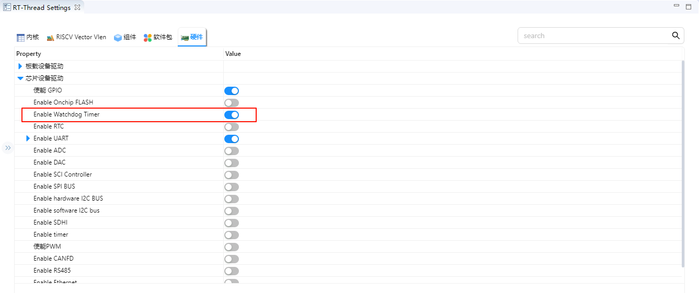
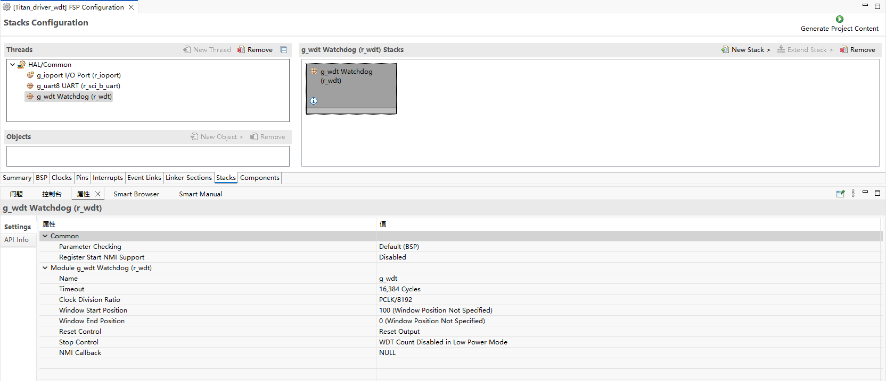

WDT 驱动示例说明
概述
本工程为基于 RT-Thread 操作系统的 RA8P1 Titan Mini 板看门狗定时器 (Watchdog Timer, WDT) 驱动示例工程。看门狗定时器是嵌入式系统中重要的可靠性组件，用于监控系统运行状态，在系统出现异常时自动复位，保证系统稳定运行。
目录结构
project/Titan_Mini_driver_wdt/
├── src/
│ └── hal_entry.c # 主入口文件，包含看门狗初始化和喂狗线程
├── ra/
│ ├── fsp/
│ │ └── src/
│ │ └── r_wdt/ # Renesas FSP 看门狗驱动源码
│ └── inc/
│ └── api/
│ └── r_wdt_api.h # 看门狗 API 接口定义
├── ra_cfg/
│ └── fsp_cfg/
│ └── r_wdt_cfg.h # 看门狗配置
├── rtconfig.h # RT-Thread 配置文件
└── Kconfig # 工程配置文件
1. 硬件介绍 - RA8P1的WDT特性
1.1 看门狗概述
看门狗定时器是一种特殊的定时器，用于监控系统运行状态。正常情况下，应用程序需要定期"喂狗"（重置定时器），如果应用程序陷入死循环、跑飞或其他异常状态而无法按时喂狗，看门狗就会触发系统复位，确保系统恢复正常。
1.2 RA8P1 WDT 主要特性
RA8P1 MCU 内置了功能丰富的看门狗定时器，具有以下特性：
1.2.1 基本特性
独立运行: 看门狗独立于主 CPU 运行，即使在 CPU 停止状态下也能继续计数
多种超时时间: 支持 128、512、1024、2048、4096、8192、16384 个时钟周期的超时设置
可配置时钟分频: 支持 1、4、16、32、64、128、256、512、2048、8192 分频
窗口看门狗功能: 支持窗口看门狗模式，只能在特定时间窗口内喂狗
1.2.2 复位模式
复位模式 (Reset Mode): 超时后触发系统复位
NMI 模式 (NMI Mode): 超时后触发不可屏蔽中断 (NMI)，用于错误处理和诊断
1.2.3 工作模式
自动启动模式 (Auto-start Mode): 复位后自动启动看门狗
寄存器启动模式 (Register-start Mode): 通过软件控制启动
1.2.4 睡眠模式支持
停止控制: 可配置在睡眠模式下是否停止计数
低功耗优化: 支持低功耗应用场景
1.3 硬件参数配置
根据 hal_entry.c 中的配置：
#define WDT_DEVICE_NAME "wdt" // 默认看门狗设备名
#define WDT_FEED_INTERVAL 1000 // 喂狗间隔（单位 ms）
#define WDT_TIMEOUT 3 // 看门狗超时时间（单位 s）
2. 软件架构 - RT-Thread看门狗设备框架
2.1 RT-Thread 看门狗驱动架构
RT-Thread 提供了标准化的看门狗设备驱动框架，通过统一的 API 接口操作不同硬件的看门狗模块。
2.1.1 驱动层次结构
应用层
↓
RT-Thread 设备驱动层
↓
硬件抽象层 (HAL)
↓
芯片寄存器操作层
2.1.2 主要组件
设备管理:
rt_device结构体管理设备实例控制接口: 提供启动、停止、喂狗等控制功能
状态查询: 获取看门狗运行状态和计数值
回调机制: 支持看门狗事件回调
2.2 FSP 集成
本工程使用 Renesas Flexible Software Package (FSP) 提供的底层驱动：
2.2.1 FSP 看门狗 API
typedef struct st_wdt_api {
fsp_err_t (* open)(wdt_ctrl_t * const p_ctrl, wdt_cfg_t const * const p_cfg);
fsp_err_t (* refresh)(wdt_ctrl_t * const p_ctrl);
fsp_err_t (* statusGet)(wdt_ctrl_t * const p_ctrl, wdt_status_t * const p_status);
fsp_err_t (* statusClear)(wdt_ctrl_t * const p_ctrl, const wdt_status_t status);
fsp_err_t (* counterGet)(wdt_ctrl_t * const p_ctrl, uint32_t * const p_count);
fsp_err_t (* timeoutGet)(wdt_ctrl_t * const p_ctrl, wdt_timeout_values_t * const p_timeout);
fsp_err_t (* callbackSet)(wdt_ctrl_t * const p_ctrl, void (* p_callback)(wdt_callback_args_t *),
void * const p_context, wdt_callback_args_t * const p_callback_memory);
} wdt_api_t;
2.2.2 配置参数
typedef struct st_wdt_cfg {
wdt_timeout_t timeout; // 超时时间
wdt_clock_division_t clock_division; // 时钟分频
wdt_window_start_t window_start; // 窗口开始位置
wdt_window_end_t window_end; // 窗口结束位置
wdt_reset_control_t reset_control; // 复位控制模式
wdt_stop_control_t stop_control; // 停止控制模式
void (* p_callback)(wdt_callback_args_t * p_args); // 回调函数
void * p_context; // 用户上下文
} wdt_cfg_t;
2.3 RT-Thread 设备配置
在 rtconfig.h 中启用看门狗支持：
#define RT_USING_WDT // 启用看门狗设备支持
#define RT_USING_PIN // 启用引脚控制支持（用于LED演示）
3. 使用示例 - 基于实际代码的看门狗初始化、喂狗
3.1 主要功能分析
3.1.1 主函数 (hal_entry)
void hal_entry(void)
{
rt_kprintf("\nHello RT-Thread!\n");
rt_kprintf("==================================================\n");
rt_kprintf("This example project is an driver wdt routine!\n");
rt_kprintf("==================================================\n");
LOG_I("Tips:");
LOG_I("You can run wdt testcase by executing the instruction: \'wdt_sample\'");
while (1)
{
rt_pin_write(LED_PIN_0, PIN_HIGH);
rt_thread_mdelay(1000);
rt_pin_write(LED_PIN_0, PIN_LOW);
rt_thread_mdelay(1000);
}
}
功能说明：
打印欢迎信息和使用提示
LED 闪烁演示（指示系统正常运行）
等待用户执行
wdt_sample命令启动看门狗测试
3.1.2 喂狗线程 (feed_dog_entry)
static void feed_dog_entry(void *parameter)
{
int count = 0;
while (1)
{
if (count < 10)
{
rt_device_control(wdt_dev, RT_DEVICE_CTRL_WDT_KEEPALIVE, RT_NULL);
LOG_I("[FeedDog] Feeding watchdog... %d", count);
}
else
{
LOG_E("[FeedDog] Simulate exception! Stop feeding.");
}
count++;
rt_thread_mdelay(WDT_FEED_INTERVAL);
}
}
功能说明：
创建独立的喂狗线程
前10次正常喂狗，之后停止喂狗模拟系统异常
通过 RT-Thread 设备控制接口实现喂狗操作
3.2 看门狗测试函数 (wdt_sample)
static int wdt_sample(void)
{
rt_err_t ret;
// 1. 查找看门狗设备
wdt_dev = rt_device_find(WDT_DEVICE_NAME);
if (wdt_dev == RT_NULL)
{
LOG_E("Cannot find %s device!", WDT_DEVICE_NAME);
return -1;
}
// 2. 启动看门狗
ret = rt_device_control(wdt_dev, RT_DEVICE_CTRL_WDT_START, RT_NULL);
if (ret != RT_EOK)
{
LOG_E("Start watchdog failed!");
return -1;
}
LOG_I("Watchdog started...", WDT_TIMEOUT);
// 3. 创建并启动喂狗线程
feed_thread = rt_thread_create("feed_dog", feed_dog_entry, RT_NULL, 1024, 10, 10);
if (feed_thread != RT_NULL)
rt_thread_startup(feed_thread);
return 0;
}
3.2.1 详细步骤解析
步骤1：查找设备
wdt_dev = rt_device_find(WDT_DEVICE_NAME);
使用
rt_device_find()函数查找名为 “wdt” 的设备返回设备句柄，后续操作使用此句柄
步骤2：启动看门狗
ret = rt_device_control(wdt_dev, RT_DEVICE_CTRL_WDT_START, RT_NULL);
使用
rt_device_control()函数发送控制命令RT_DEVICE_CTRL_WDT_START启动看门狗返回操作状态码
步骤3：创建喂狗线程
feed_thread = rt_thread_create("feed_dog", feed_dog_entry, RT_NULL, 1024, 10, 10);
创建名为 “feed_dog” 的线程
入口函数为
feed_dog_entry栈大小 1024 字节
优先级 10，时间片 10
3.3 RT-Thread 看门狗 API
3.3.1 设备查找和控制
// 查找设备
rt_device_t rt_device_find(const char *name);
// 设备控制
rt_err_t rt_device_control(rt_device_t dev, int cmd, void *arg);
常用控制命令：
RT_DEVICE_CTRL_WDT_START: 启动看门狗RT_DEVICE_CTRL_WDT_STOP: 停止看门狗RT_DEVICE_CTRL_WDT_KEEPALIVE: 喂狗操作
3.3.2 线程操作
// 创建线程
rt_thread_t rt_thread_create(const char *name,
void (*entry)(void *parameter),
void *parameter,
size_t stack_size,
rt_int32_t priority,
rt_uint32_t tick);
// 启动线程
rt_err_t rt_thread_startup(rt_thread_t thread);
// 延时
void rt_thread_mdelay(rt_int32_t ms);
4. 配置说明 - 超时时间、复位模式
4.1 超时时间配置
4.1.1 硬件层面的超时设置
RA8P1 WDT 支持多种超时时间配置：
// 超时时间枚举
typedef enum e_wdt_timeout {
WDT_TIMEOUT_128 = 0, // 128 个时钟周期
WDT_TIMEOUT_512 = 1, // 512 个时钟周期
WDT_TIMEOUT_1024 = 2, // 1024 个时钟周期
WDT_TIMEOUT_2048 = 3, // 2048 个时钟周期
WDT_TIMEOUT_4096 = 4, // 4096 个时钟周期
WDT_TIMEOUT_8192 = 5, // 8192 个时钟周期
WDT_TIMEOUT_16384 = 6, // 16384 个时钟周期
} wdt_timeout_t;
4.2 复位模式配置
4.2.1 复位模式选择
// 复位控制枚举
typedef enum e_wdt_reset_control {
WDT_RESET_CONTROL_NMI = 0, // NMI/IRQ 请求模式
WDT_RESET_CONTROL_RESET = 1, // 复位模式
} wdt_reset_control_t;
4.2.2 模式特性对比
模式 |
特点 |
适用场景 |
|---|---|---|
复位模式 |
超时后直接触发系统复位 |
一般应用，需要自动恢复 |
NMI模式 |
超时后触发不可屏蔽中断 |
诊断和调试，需要在复位前处理 |
5.WDT工程配置
首先需要在RT-Thread Studio Settings打开Watchdog Timer

随后使用 Renesas Flexible Software Package (FSP) 进行硬件配置,如下图


5. 运行效果示例
5.1 正常运行流程

结论
RA8P1 Titan Mini 板看门狗定时器驱动工程通过精心设计和实现，提供了一个稳定、可靠的看门狗解决方案。该方案不仅满足了基本的看门狗功能需求，还具备良好的扩展性和实用性，适用于各种嵌入式应用场景。